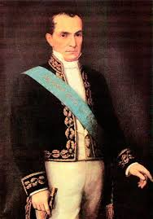
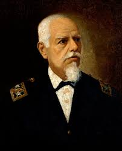
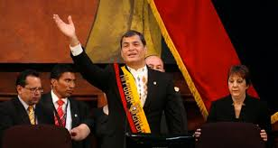
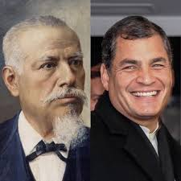

La lista de presidentes del Ecuador desde su independencia en 1830 hasta la actualidad es extensa, incluyendo a figuras como Juan José Flores, Vicente Rocafuerte, Gabriel García Moreno, Eloy Alfaro, José María Velasco Ibarra, entre otros.
| Galeria de Presidentes | ||
|---|---|---|
| VICENTE ROCAFUERTE | ELOY ALFARO | RAFAEL CORREA |
|  |  |  |
Eloy Alfaro y Vicente Rocafuerte son figuras históricas importantes en Ecuador, pero no tienen una relación directa con Rafael Correa. Eloy Alfaro fue un líder revolucionario liberal que luchó contra los conservadores y la Iglesia Católica, mientras que Rocafuerte fue un presidente constitucionalista que impulsó reformas liberales. Correa, por otro lado, fue un presidente de la República que gobernó desde 2006 hasta 2017.
 IR A LA VER A LOS PRESIDENTES DE ECUADOREl presidente de Ecuador, también denominado presidente constitucional de la República del Ecuador, es el jefe de Estado y gobierno del país sudamericano, ejerciendo la Función Ejecutiva. Es asistido por un vicepresidente y un equipo de colaboradores agrupados en el Gabinete de Ministros, a su vez es el comandante supremo de las Fuerzas Armadas. Su lema es «Mi Poder en la Constitución», frase que aparece desde 1830 en la Banda Presidencial.